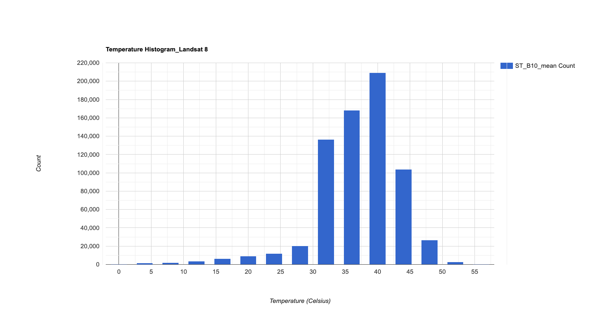
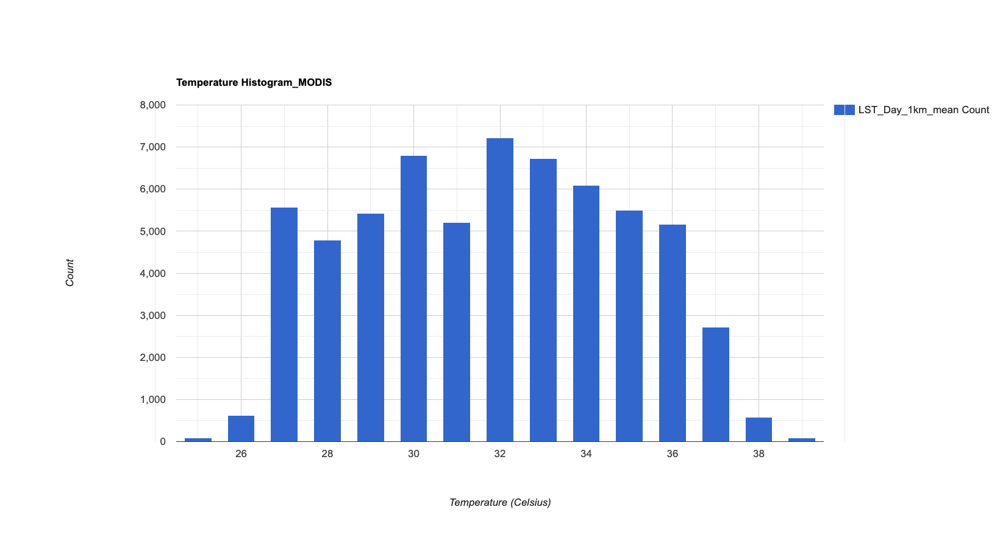

8 Week09
1. Content Summary: Temperature
Based on my discussion on heat island effect issues and policies in Singapore in week04, I found that remote sensing data has advantages in discussing heat mitigation measures. This week we will further practice using Landsat 8 and Moderate Resolution Imaging Spectroradiometer (MODIS) dataset to obtain Land Surface Temperature (LST) to discover how temperatures change with geographic space in Singapore.Figure 1 shows the region map of Singapore. In the section, satellite images from May to July 2021 are selected for analysis.

1.1 Landsat 8
Landsat 8 provides data with high spatial resolution (30m) and temporal resolution (16 day). The advantage of using Landsat 8 to extract LST is that it has a thermal infrared sensor (TIRS) with thermal bands. Besides, Level 2 product provides the data after radiometric correction and atmospheric correction. Furthermore, the dataset contains land surface temperature, which can be calculated directly from band 10.
Due to the geographical location and climatic conditions of Singapore, the availability of satellite images is significantly affected. To acquire more images, I set a relatively high cloud cover threshold (11%). Subsequently, I processed the images by converting temperature units from Kelvin to Celsius and removing any pixels that have below 0 values. Furthermore, the mean values were conducted to reduce the dimensionality. Finally, the image was clipped by boundaries vector data, shown in Figure 2.

The result clearly shows missing values in the northeast areas. This is likely due to the transformation of Band 10 into temperature, where values below 0 are considered missing. This could be influenced by factors such as sensor noise, cloud cover and pre-processing steps.
In Singapore, the areas with high LST are primarily concentrated in the three regions, which are the western gateway, where industrial areas are concentrated, the eastern aviation hub, and the central business district (CBD) in the south. These areas with high LST further reflect the urban fabric. In contrast, green and blue areas indicate lower LST, mainly presenting as blue and green colours.
1.2 Moderate Resolution Imaging Spectroradiometer (MODIS)
MODIS features high temporal resolution and low spatial resolution. It consists of two sensors, Terra and Aqua. Terra passes from north to south across the equator in the morning, while Aqua passes from south to north in the afternoon. Therefore, MODIS has a higher temporal resolution, approximately 1-2 days. However, its thermal infrared bands have a spatial resolution of 1 kilometre, which is much higher than that of Landsat 8.
By scaling the data, merging data from Terra and Aqua, and calculating the average, the MODIS image of summer mean LST is demonstrated in Figure 3.

In terms of identification of low-temperature areas, MODIS is basically consistent with Landsat 8, but there are some differences in high-temperature areas. MODIS shows significantly high LST areas in the southeast region.
1.3 Comparsion of Landsat 8 LST data and MODIS LST data
Figure 4 and Figure 5 compare the LST distribution of Landsat 8 and MODIS. The Landsat 8 data seems to have some extremely high and low values (minimum and maximum: 2.5 and 58.5)that may show some potential errors. While MODIS LST data is distributed within a reasonable range from 25.5(minimum) to 39.1(maximum).


Potential reasons include the following: Firstly, different atmospheric correction methods are used in the preprocessing stage, and their sensors have differentiated sensitivities to the thermal band, resulting in various results under the circumstances. Secondly, due to differences in spatial resolution, Landsat 8 can more accurately capture small-scale temperature changes, while MODIS may average temperatures over a larger range. Additionally, due to differences in temporal resolution, MODIS can more accurately capture temporal temperature changes, providing the LST results close to the ground situation.
2. Application
Based on this week’s practice of collecting LST using remote sensing data, I found that remote sensing satellite data has certain limitations when used. LST data with high spatial and temporal resolution are not available concurrently due to the mutual constraints of spatial and temporal resolution (Li et al., 2021). Landsat 8 with high spatial resolution and MODIS with high temporal resolution indicate complementary features, which can improve LST retrieval(Zhao et al., 2020). Thus, scholars have explored various applications of MODIS and LST to improve the quality of LST data.
Based on the characteristics of satellite images, Sidiqui, Huete and Devadas (2016) analysed time series of UHI intensity in Sydney using MODIS LST data, which could obtain the global characteristics of UHI; and then the Landsat 8 LST data was employed to capture the hot spot locations of UHI more clearly. In addition, some scholars have developed high-spatiotemporal-resolution LST data from a technical perspective. Data Fusion of MODIS and Landsat 8 is an effective method to improve the two resolutions of LST data(Zhao et al., 2020). Data fusion with multi-sensor refers to combining two or more calibrated images into a single one that has the best features of both (Ghassemian, 2016). To increase the quality of LST data, various models have been provided to merge the Landsat 8 LST data and MODIS LST data (Li et al., 2021; Zhao et al., 2020; and Yang et al., 2020), such as the Flexible Spatiotemporal Data Fusion method (FSDAF) proposed by Yang et al., (2020)and Spatial and Temporal Adaptive Reflectance Fusion Model (STARFM) proposed by Li et al.(2021). By comparing the original LST data and the ground measurements LST, the LST data generated by these models all reflect relatively good feasibility and accuracy. The combined LST data can capture the spatial pattern from Landsat 8 and also retain the temporal information from MODIS LST. Overall, this is an interesting research direction that can combine the advantages of sensors, while it also requires complex and interdisciplinary expert knowledge.
3. Reflection
Capturing the LST data by myself is an exciting process, although some problems affect the availability of final results. Besides, using GEE to calculate LST is more effective and time-saving, significantly reducing the computational cost. In addition, due to the limitations of current remote sensing datasets, the application section explored the various data fusion methods, providing a research direction that combines deep learning methods and multi-sensor data to enhance the resolution of LST results.
However, it is worth noting that LST is spatial heterogeneity but also may be affected by spatial autocorrelation. Therefore, future research can explore how to more accurately reflect the spatial distribution of LST and capture the dynamic changes of UHI through image fusion that considers resolution and spectrum. One potential idea is to include terrain or building footprint data into image fusion.
This course has given me a deep understanding that remote sensing is a vast interdisciplinary knowledge system. It is necessary to understand multiple subjects, such as optical mechanics, computer science, mathematics, geography, and meteorology, etc., which can better understand and apply remote sensing data. In addition, GEE and various sensor datasets have a high exploitability,allowing more exploration for preprocessing, analysis and technique development steps. I look forward to further applying remote sensing knowledge to my study and career in the future. :)
4. Reference
Ghassemian, H. (2016). ‘A review of remote sensing image fusion methods’. Information Fusion, 32, pp. 75–89. doi: 10.1016/j.inffus.2016.03.003.
Li, S., Wang, J., Li, D., Ran, Z. and Yang, B. (2021). ‘Evaluation of Landsat 8-like Land Surface Temperature by Fusing Landsat 8 and MODIS Land Surface Temperature Product’. Processes, 9 (12), p. 2262. doi: 10.3390/pr9122262.
Lu, Y., Chen, Q., Yu, M., Wu, Z., Huang, C., Fu, J., Yu, Z. and Yao, J. (2023). ‘Exploring spatial and environmental heterogeneity affecting energy consumption in commercial buildings using machine learning’. Sustainable Cities and Society, 95, p. 104586. doi: 10.1016/j.scs.2023.104586.
Sidiqui, P., Huete, A. and Devadas, R. (2016). ‘Spatio-temporal mapping and monitoring of Urban Heat Island patterns over Sydney, Australia using MODIS and Landsat-8’. in 2016 4th International Workshop on Earth Observation and Remote Sensing Applications (EORSA). 2016 4th International Workshop on Earth Observation and Remote Sensing Applications (EORSA), Guangzhou, China: IEEE, pp. 217–221. doi: 10.1109/EORSA.2016.7552800.
Yang, H., Xi, C., Zhao, X., Mao, P., Wang, Z., Shi, Y., He, T. and Li, Z. (2020). ‘Measuring the Urban Land Surface Temperature Variations Under Zhengzhou City Expansion Using Landsat-Like Data’. Remote Sensing, 12 (5), p. 801. doi: 10.3390/rs12050801.
Zhao, G., Zhang, Y., Tan, J., Li, C. and Ren, Y. (2020). ‘A Data Fusion Modeling Framework for Retrieval of Land Surface Temperature from Landsat-8 and MODIS Data’. Sensors, 20 (15), p. 4337. doi: 10.3390/s20154337.